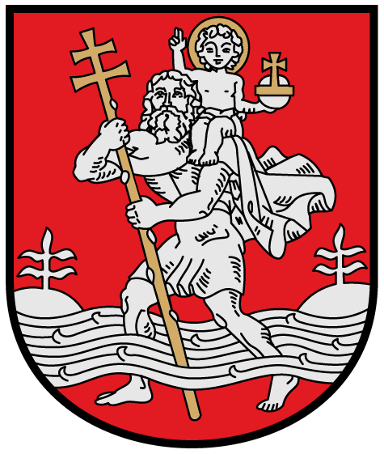

Main facts
- Population: 580020
- Mayor: Remigijus Simasius
- Ethnographic region: Dzukija
- Size rank in Lithuania: 1
- Timezone of the city: UTC+2
Remigijus Simasius was born in 1974 January 12th in Taurage, Lithuania. In 2002 he finished his doctorate degree in law. He did an internship at the "Heritage Foundation". In 2008 he took office as a justice minister of Lithuania. In 2015 he became the mayor of Vilnius.
Coat of Arms of Vilnius
Logo of Vilnius
This is a video describing city of Vilnius.